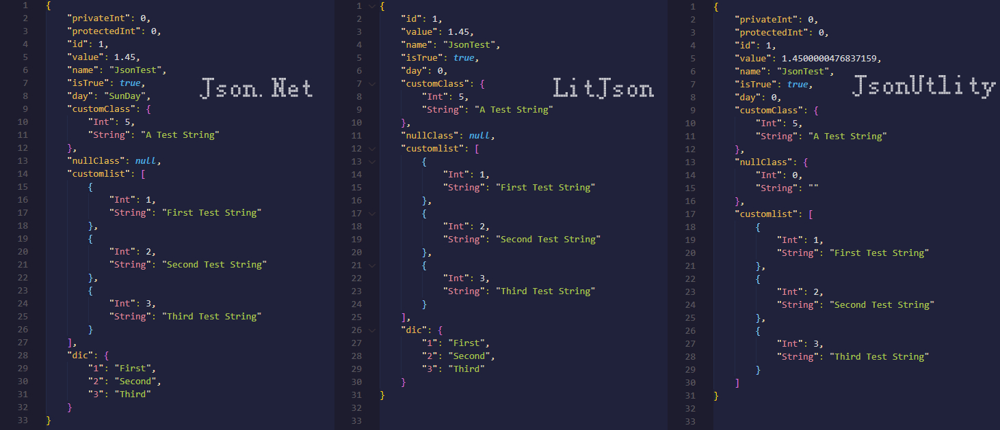

Json(JavaScript Object Notation)即JS对象简谱，纯文本键值对结构，一种轻量级的数据交换格式，相对于XML来说配置更简单，一般情况下更利于计算机读取
序列化和反序列化
json的序列化和反序列化方式有很多种，就我自己用过的有以下几种:
- Json .NET(Newtonsoft .Json)
- JsonUtlity
- LitJson
- JavaScriptSerializer
DataContractJsonSerializer
这里只举例unity中用的比较多的前三种
Json .Net
这玩意功能很强大，甚至支持序列化和反序列化DataTable，DataSet，Entity Framework和NHibernate，也是我最常用的一种，缺点是dll比较大，此外还有许多特性配合使用
特性|描述
——-|——-
[JsonObject(MemberSerialization.OptOut)]|默认使用的特性，此类中的所有公共成员都会被序列化
[JsonObject(MemberSerialization.OptIn)]|只有标有特性[JsonProperty]的成员才会被序列化
[DefaultValue(int value)]|序列化时使用的默认值
[JsonProperty]|支持序列化访问属性为私有或保护的成员
[JsonProperty(PropertyName = “CName”)]|自定义序列化成员名称
[JsonProperty(NullValueHandling=NullValueHandling.Ignore)]|若该成员的值为null，则忽略
[JsonIgnore]|忽略掉该成员
[JsonConverter(typeof(StringEnumConverter))]|序列化时将枚举转换成字符串
[JsonConverter(typeof(IsoDateTimeConverter))]|日期格式化，不常用，一般改成自定义的日期特性序列化:
public static void SaveData<T>(T data, string filepath) where T : class, new() { string jsonStr = jsonStr = JsonConvert.SerializeObject(data); using (StreamWriter writer = new StreamWriter($"{filepath}.json")) { writer.Write(jsonStr); } }反序列化：
public static T LoadData<T>(string filepath) where T : class, new() { if (!File.Exists($"{Path}/{filename}")) { return new T(); } string jsonStr = string.Empty; using (StreamReader reader = new StreamReader($"{filepath}.json")) { jsonStr = reader.ReadToEnd(); } return JsonConvert.DeserializeObject<T>(jsonStr); }附上自定义日期特性
public class UniversalDateTimeConverter : DateTimeConverterBase { private static IsoDateTimeConverter isoConverter = new IsoDateTimeConverter { DateTimeFormat = "yyyy-MM-dd HH:mm:ss" }; public override object ReadJson(Newtonsoft.Json.JsonReader reader, Type objectType, object existingValue, JsonSerializer serializer) { return isoConverter.ReadJson(reader, objectType, existingValue, serializer); } public override void WriteJson(Newtonsoft.Json.JsonWriter writer, object value, JsonSerializer serializer) { isoConverter.WriteJson(writer, value, serializer); } }JsonUtlity
unity自带的Json解析类，只能处理一些简单的类，懒得导入其他json解析类时用这个，使用时因注意：
- 不支持序列化字典
- float类型写入时看起来有些毛病，不过读取时没问题
- 序列化自定义类时需要使用特性
[System.Serializable] - 对于私有和保护类型成员，如果需要序列化，则需要使用特性
[SerializeField] - 不支持直接反序列化为数据集合（即反序列化类型不能为
Collection） 注意json文件编码格式必须为utf-8
序列化：
public static void SaveData<T>(T data, string filepath) where T : class, new() { string jsonStr = jsonStr = JsonUtility.ToJson(data); using (StreamWriter writer = new StreamWriter($"{filepath}.json")) { writer.Write(jsonStr); } }反序列化：
public static T LoadData<T>(string filepath) where T : class, new() { if (!File.Exists($"{Path}/{filename}")) { return new T(); } string jsonStr = string.Empty; using (StreamReader reader = new StreamReader($"{filepath}.json")) { jsonStr = reader.ReadToEnd(); } return JsonUtility.FromJson<T>(jsonStr); }
LitJson
相对于JsonUtlity来说稍微方便点，不需要添加特性，而且支持字典的序列化和反序列化为数据集合
序列化：
public static void SaveData<T>(T data, string filepath) where T : class, new() { string jsonStr = jsonStr = JsonMapper.ToJson(data); using (StreamWriter writer = new StreamWriter($"{filepath}.json")) { writer.Write(jsonStr); } }反序列化：
public static T LoadData<T>(string filepath) where T : class, new() { if (!File.Exists($"{Path}/{filename}")) { return new T(); } string jsonStr = string.Empty; using (StreamReader reader = new StreamReader($"{filepath}.json")) { jsonStr = reader.ReadToEnd(); } return JsonMapper.ToObject<T>(jsonStr); }LitJson内置了Json访问器
JsonData，可以通过JsonData来获取Json字符串中的键值对：string jsonStr = "{'students':[{'name':'Gatongone','age':20},{'name':'Khaki','age':21}]}"; JsonData datas = JsonMapper.ToObject(jsonStr); JsonData students = datas["students"]; foreach(JsonData student in students) { Debug.Log(student["name"].ToString()); Debug.Log((int)student["age"]); }
Json .Net、JsonUtlity、LitJson对比
对同一个实例进行序列化，看一下三者的区别
public enum Day { SunDay, MonDay } [Serializable] public class CustomClass { public int Int; public string String; public CustomClass(int Int, string String) { this.Int = Int; this.String = String; } } public class JsonInfo { [JsonProperty] [SerializeField] private int privateInt; [JsonProperty] [SerializeField] protected int protectedInt; public int id; public float value; public string name; public bool isTrue; [JsonConverter(typeof(StringEnumConverter))] public Day day; public CustomClass customClass; public CustomClass nullClass; public List<CustomClass> customlist; public Dictionary<int, string> dic; }JsonInfo Init() { JsonInfo jd = new JsonInfo(); ji.id = 1; ji.name = "JsonTest"; ji.value = 1.45f; ji.isTrue = true; ji.customClass = new CustomClass(5, "A Test String"); ji.nullClass = null; ji.day = Day.SunDay; ji.customlist = new List<CustomClass>() { new CustomClass(1, "First Test String"), new CustomClass(2, "Second Test String"), new CustomClass(3, "Third Test String"), }; ji.dic = new Dictionary<int, string>() { {1,"First"}, {2,"Second"}, {3,"Third"} }; return ji; }分别对JsonInfo实例进行序列化，生成的json文件如下

\ |Json .Net|LitJson|JsonUtlity
——-|——-|——-|——-
字典|支持|支持|不支持
Collection数据集合|支持|支持|不支持
null对象|写入null|写入null|写入默认值
自定义序列化类|无需特性|无需特性|[System.Serializable]
私有、保护成员变量|[JsonProperty]|不支持序列化|[SerializeField]
Json访问器|无|JsonData|无